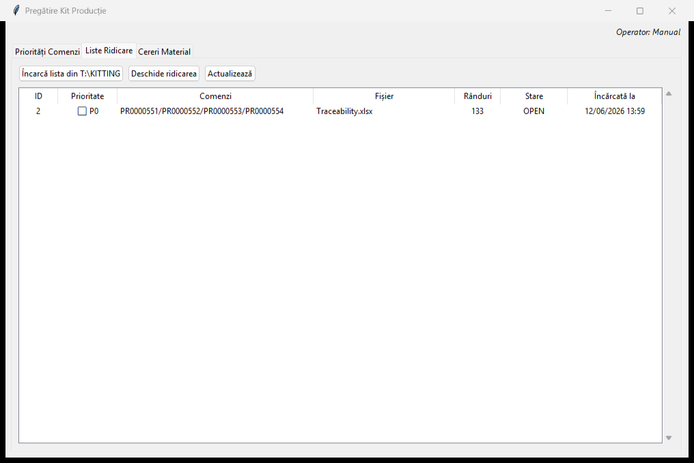
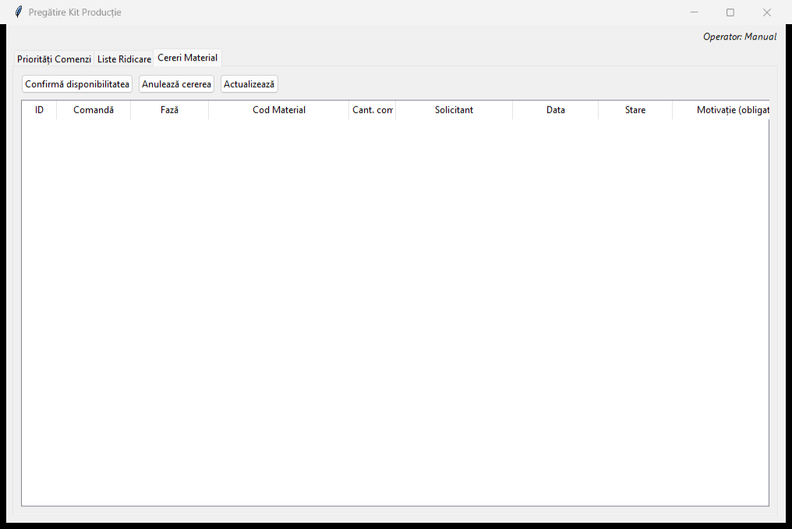
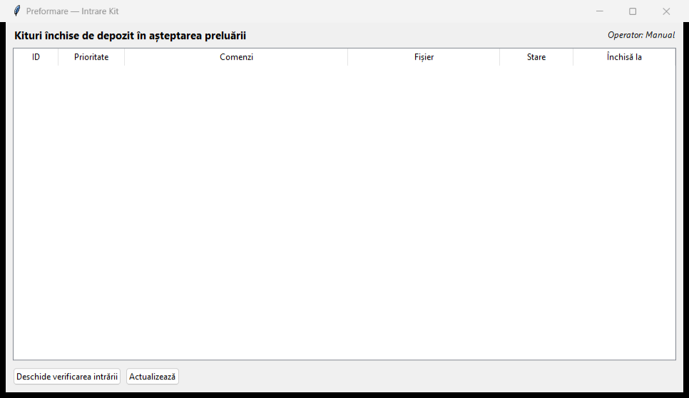
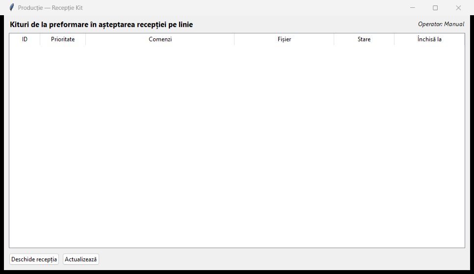
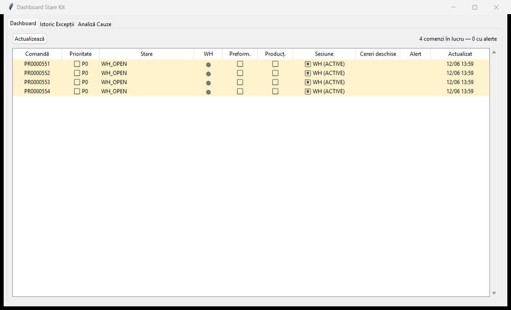
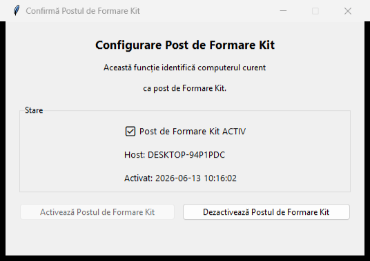
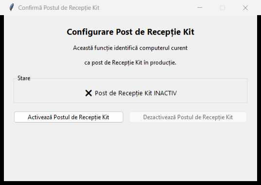

Modulul Pregătire Kit Producție gestionează întregul flux de pregătire a kiturilor de materiale pentru comenzile de producție: de la stabilirea priorităților și ridicarea materialelor din depozit, la verificarea la intrarea în preformare și la recepția pe linia de producție. Fiecare etapă este trasabilă și fiecare neconformitate generează notificări (popup + e-mail) către postul de lucru responsabil.
📍 Poziție în meniu: Materiale → Pregătire Kit Producție
Fluxul de lucru
1. Priorități comenzi→2. Ridicare depozit→3. Intrare preformare→4. Recepție pe linie
În paralel cu fluxul principal, operatorii pot emite cereri de material suplimentar, iar starea tuturor comenzilor poate fi monitorizată în Dashboard Stare Kit.
Ridicare Depozit, Intrare Preformare, Recepție Producție — autentificare autorizată (utilizatorul trebuie să dețină dreptul corespunzător).
Dashboard Stare Kit — fără autentificare (numai citire).
3. Priorități Comenzi
Permite planificatorului să stabilească prioritatea comenzilor care urmează să fie pregătite. Comenzile marcate P0 apar primele în lista de ridicare și în dashboard.
Opțional, căutați o comandă în câmpul Caută comandă și apăsați Caută.
Selectați una sau mai multe comenzi din listă.
Alegeți nivelul din lista derulantă Prioritate (ex. [0] Normal sau P0).
Apăsați Aplică la selecție. Bifa din coloana Prioritate reflectă noua setare.
Coloană
Semnificație
Comandă
Numărul comenzii de producție.
Produs
Codul produsului finit.
Cant. comandă
Cantitatea comenzii.
Prioritate
Bifă P0 = prioritate maximă.
Setată de
Utilizatorul care a stabilit prioritatea.
4. Liste Ridicare (Ridicare Depozit)
Aici se gestionează listele de ridicare a materialelor din depozit. O listă este importată din fișierul Excel de pe partajarea T:\KITTING și conține toate codurile de material necesare comenzilor.

Fila „Liste Ridicare” cu o listă încărcată din T:\KITTING.
Pași
Apăsați Încarcă lista din T:\KITTING pentru a importa un fișier de ridicare nou. Sistemul normalizează numerele de comandă și creează lista cu starea OPEN.
Selectați lista dorită și apăsați Deschide ridicarea.
În fereastra de detaliu, parcurgeți fiecare cod de material și confirmați cantitatea ridicată. Rândurile ridicate sunt marcate ca prelevate.
După prelevarea tuturor pozițiilor, finalizați lista: kitul trece către etapa de preformare.
Actualizează reîmprospătează lista de pe ecran.
Coloană
Semnificație
ID
Identificatorul listei de ridicare.
Prioritate
P0 dacă lista conține comenzi prioritare.
Comenzi
Comenzile incluse în listă (separate prin „/”).
Fișier
Numele fișierului Excel sursă.
Rânduri
Numărul de poziții (coduri de material).
Stare
OPEN · REOPENED · COMPLETED.
Încărcată la
Data și ora importului.
⚠️ Dacă verificarea la intrarea în preformare eșuează, lista este redeschisă (stare REOPENED) și pozițiile neconforme revin la prelevare.
5. Cereri Material
Fila Cereri Material gestionează cererile de material suplimentar transmise de operatorii din preformare/producție către depozit.

Fila „Cereri Material”.
Acțiuni
Confirmă disponibilitatea — depozitul confirmă că materialul este pregătit pentru ridicare; solicitantul primește un popup Material pregătit pe calculatorul său.
Anulează cererea — anulează o cerere (ex. „material găsit în producție”); se solicită un motiv.
Actualizează — reîmprospătează lista.
Coloană
Semnificație
ID / Comandă / Fază
Identificator, comanda și faza care a generat cererea.
Cod Material · Cant. com.
Materialul și cantitatea solicitată.
Solicitant · Data
Cine a cerut și când.
Stare
PENDING · CONFIRMED · CANCELLED.
Motivație
Motivul cererii (obligatoriu).
⏰ Cererile rămase în starea PENDING peste timpul configurat (implicit 10 minute) generează automat un memento (reminder) către postul de Formare Kit.
6. Preformare — Intrare Kit
În această etapă se verifică kiturile închise de depozit, înainte de preluarea lor în preformare. Operatorul confirmă că materialele primite corespund listei.

Fereastra „Preformare — Intrare Kit”: kituri în așteptarea preluării.
Pași
Selectați un kit din lista Kituri închise de depozit în așteptarea preluării.
Apăsați Deschide verificarea intrării.
Verificați fiecare cod de material și cantitate.
Dacă totul este conform → confirmați; kitul avansează către recepția pe linie.
Dacă există neconformități → finalizați cu eșec; lista de ridicare este redeschisă, iar postul de Formare Kit primește un popup de alertă.
Actualizează reîmprospătează lista.
Coloană
Semnificație
ID · Prioritate · Comenzi
Datele kitului.
Fișier
Fișierul listei de ridicare.
Stare
Starea curentă a kitului.
Închisă la
Momentul în care depozitul a închis ridicarea.
7. Producție — Recepție Kit
Ultima etapă: linia de producție recepționează kitul venit din preformare și verifică integritatea acestuia înainte de consum.

Fereastra „Producție — Recepție Kit”: kituri în așteptarea recepției pe linie.
Pași
Selectați kitul din lista Kituri de la preformare în așteptarea recepției pe linie.
Apăsați Deschide recepția.
Verificați cantitățile primite față de cele așteptate.
Conform → recepție validată, kitul poate fi consumat.
Neconform (kit incomplet) → comanda trece în starea BLOCKED_MISSING_MATERIAL și postul de Recepție Kit Producție primește un popup de alertă. Pozițiile pot fi reverificate după corectare.
8. Dashboard Stare Kit
Vedere de ansamblu, numai citire, asupra stării tuturor kiturilor. Nu necesită autentificare.

Dashboard Stare Kit cu filele „Dashboard”, „Istoric Excepții” și „Analiză Cauze”.
Dashboard — starea fiecărei comenzi pe etape: WH (depozit), Preform. (preformare), Product. (producție), sesiunea activă și numărul de cereri deschise.
Istoric Excepții — istoricul neconformităților și al evenimentelor de blocare.
Popup-urile kitului sunt direcționate către posturi de lucru desemnate explicit. Fiecare calculator trebuie activat pentru rolul corespunzător; activarea creează un fișier local în %LOCALAPPDATA%.
Post de Formare Kit
Calculatorul din depozit/preformare care primește alertele legate de formarea kitului: cereri de material, verificare preformare eșuată, anulări, memento-uri.

Fereastra „Confirmă Postul de Formare Kit” (activă pe acest calculator).
Post de Recepție Kit Producție
Calculatorul de pe linia de producție care primește alertele legate de recepția kitului (kit incomplet la recepția pe linie).

Fereastra „Confirmă Postul de Recepție Kit”.
Cum se activează / dezactivează
Din meniul Materiale → Pregătire Kit Producție alegeți Confirmă Postul de Formare Kit sau Confirmă Postul de Recepție Kit.
Apăsați Activează pentru a desemna acest calculator (starea devine ACTIV, se afișează hostul și momentul activării).
Apăsați Dezactivează pentru a anula desemnarea.
⚠️ Dacă activarea/dezactivarea returnează o eroare de permisiuni, rulați aplicația ca Administrator.
✅ Mai multe calculatoare pot avea același rol activ: un popup este afișat o singură dată (revendicare atomică), pe primul post care îl preia.
10. Notificări (popup & e-mail)
Sistemul trimite notificări în două moduri complementare:
Eveniment
Destinatar popup
Cerere de material / verificare preformare eșuată / anulare / memento
Postul de Formare Kit
Material pregătit (confirmare disponibilitate)
Calculatorul solicitantului
Kit incomplet la recepția pe linie
Postul de Recepție Kit Producție
În paralel, alertele importante sunt trimise pe e-mail destinatarilor configurați în setarea Sys_email_Kit_materiali.
ℹ️ Pentru ca popup-urile să apară, calculatorul trebuie activat pentru rolul corespunzător (vezi secțiunea 9). Pentru e-mailuri, setarea Sys_email_Kit_materiali trebuie completată.